SENTRI · INSPECTION · 2026-11-19
巡检入口：已同步
按现场点按顺序看入口、页面和返回。完成项沿用仓库现行组件和规则。
1. 首页入口
Home 单元卡 → Inspect unit；To treat / Monitoring → 点一行 → 对应单元 Health
普通入口从当前单元开始；关注入口直接进 Health，返回原列表。底部放大镜是首页自己的查找。

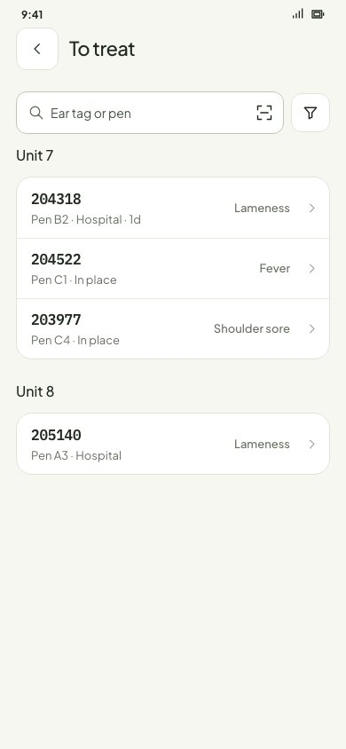
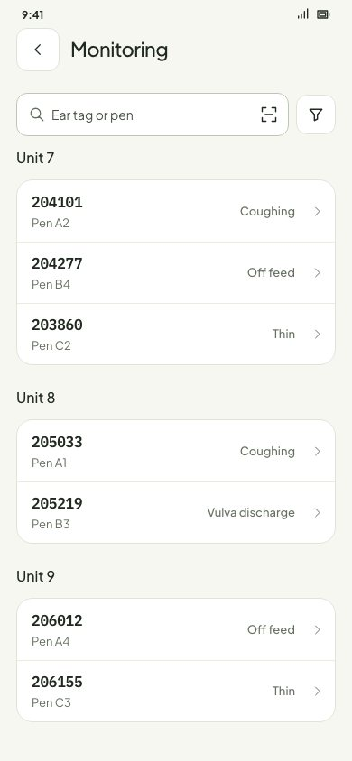
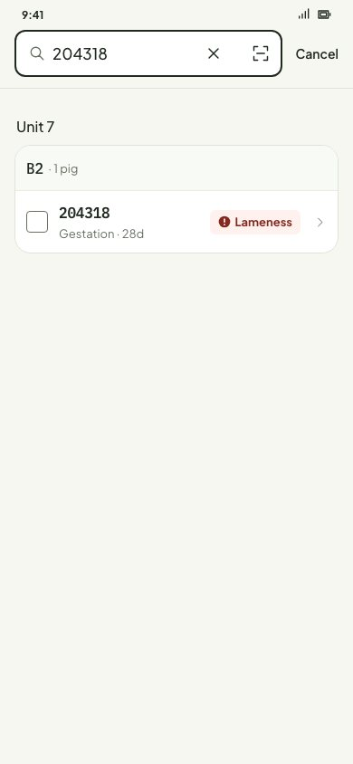
2. 查找、扫码和返回
巡检 → Search → 输入 30 → 扫码图标 → Scan → 返回
底部 Scan 与查找里的扫码图标到同一个全屏页面。区别只在返回目的地：从列表进就回列表；从查找进就回查找。

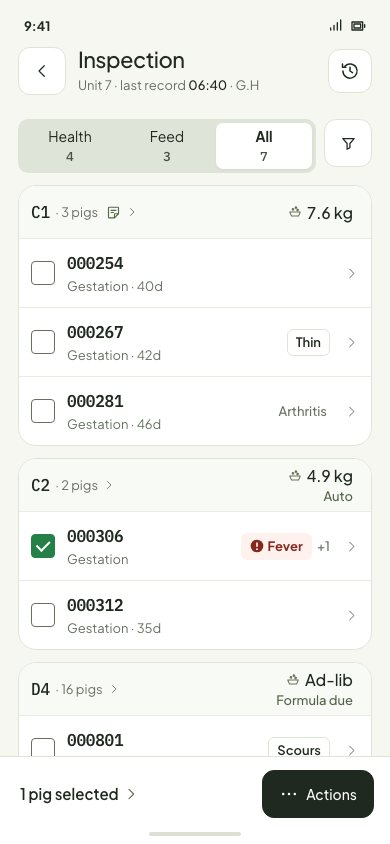
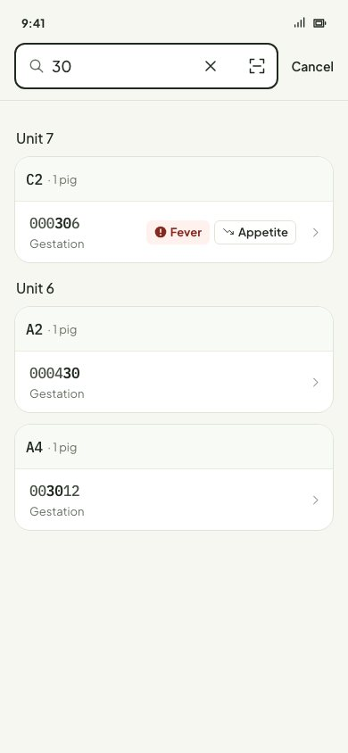
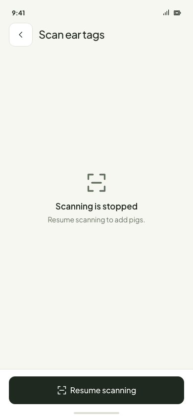
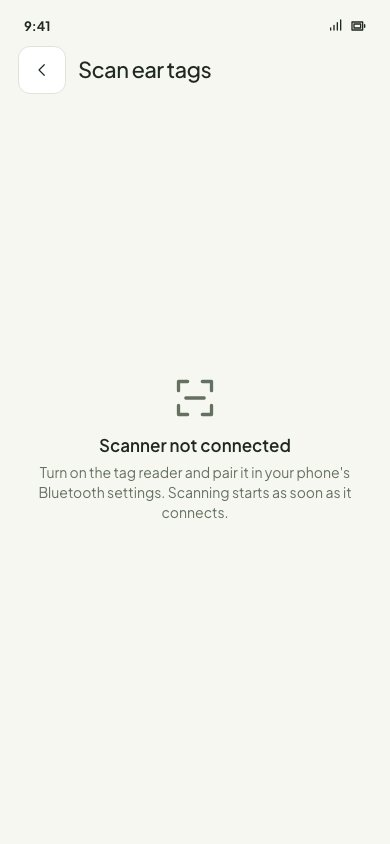
3. 核对要操作哪几头猪
扫码两头 → 点其中一行 → 档案 → Actions → 返回两次
扫码下方的 Actions 针对已勾选多头；先点耳号进入档案，再点 Actions，只对当前这头。

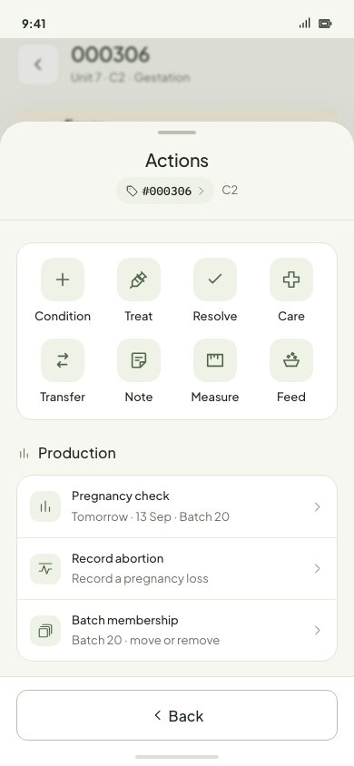
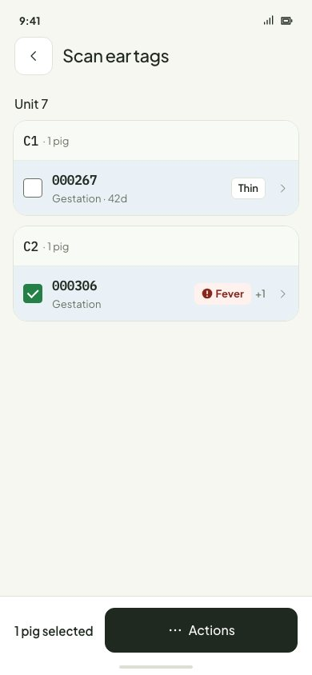
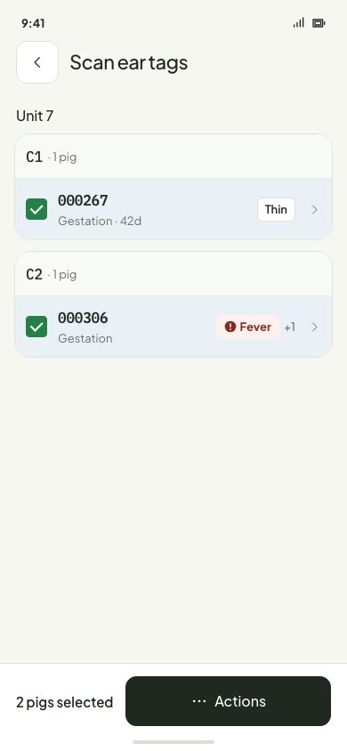
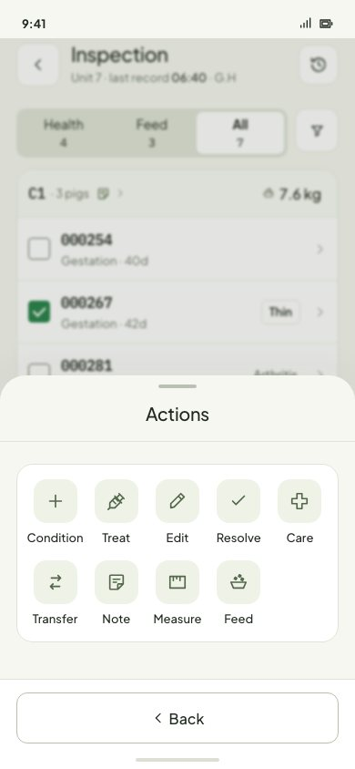
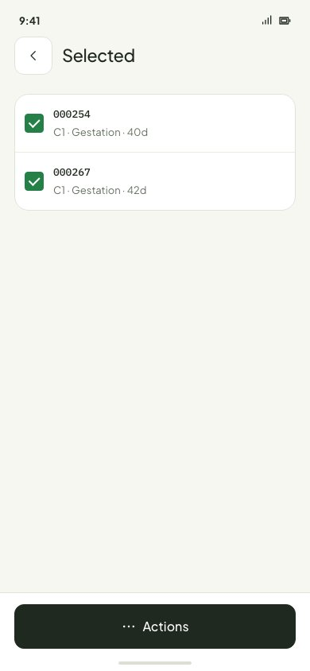
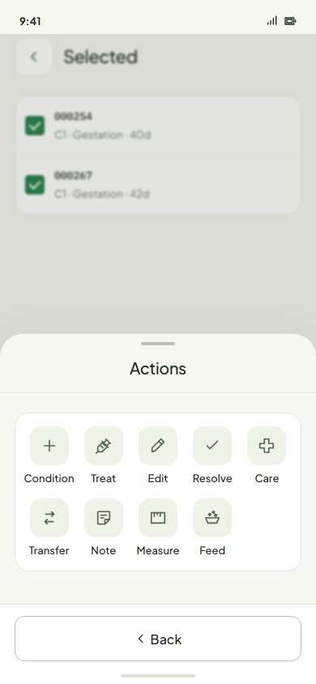
已验证单头 Actions 只写给当前猪；按返回退出能恢复原勾选。保存仍走该表单原有去向。
4. 报障、解除、看日志
巡检 → 栏位 C1 → Fault → 报告 → 返回列表 → 扳手所在栏 → 故障记录 → Resolve fault
把 Atlas 从旧演示切到同一个可点的实际表单。填 Other 时才要填设备名称；报完回栏位，走回列表会看到扳手。
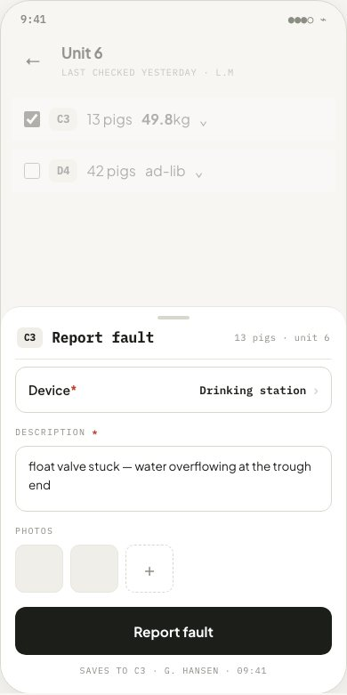
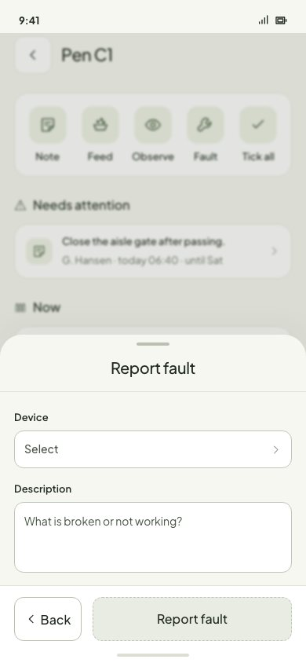
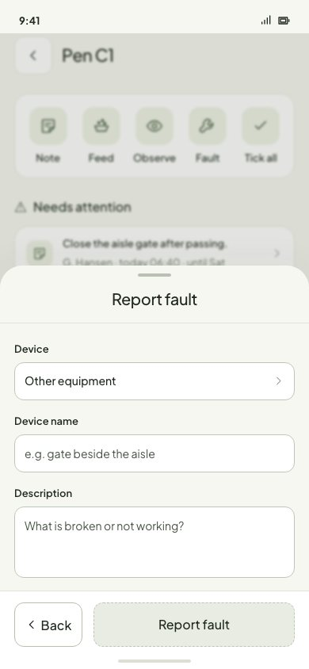
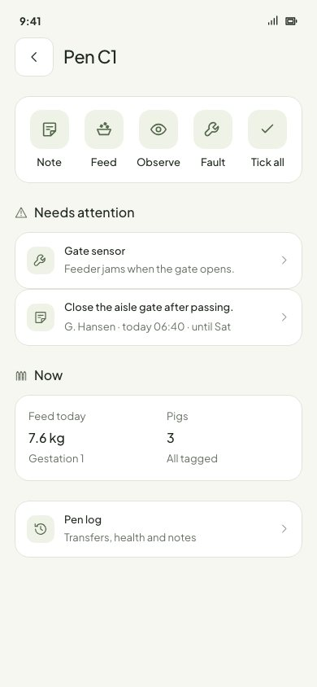
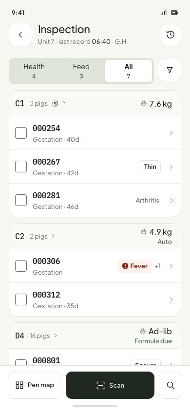
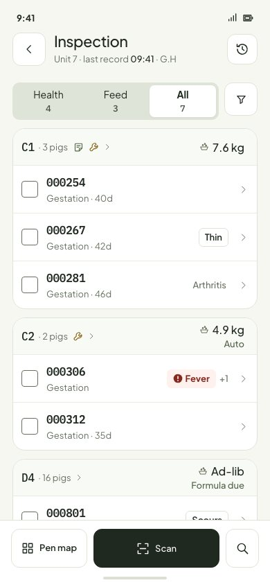
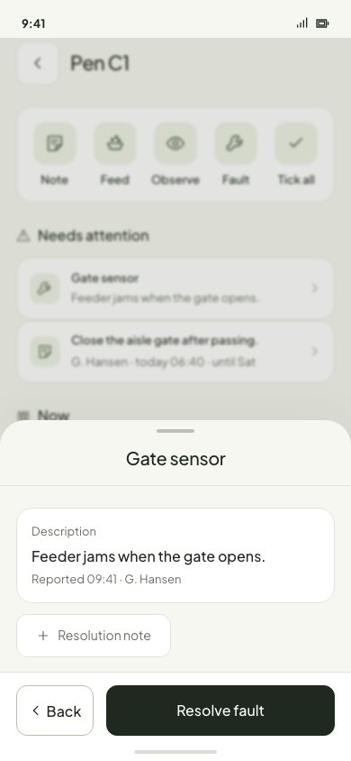
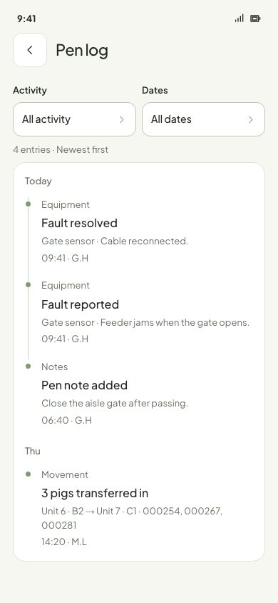
5. 从地图找栏、看栏况和记备注
巡检 → Pen map → 点栏定位 → 点栏名；或者直接点列表的栏名
地图定位到列表的栏，栏名打开同一栏位。巡检右上 History 看本次活动；栏位页内 Pen log 只看当前栏。
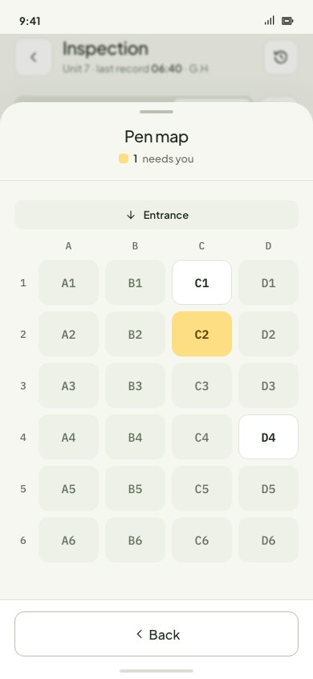
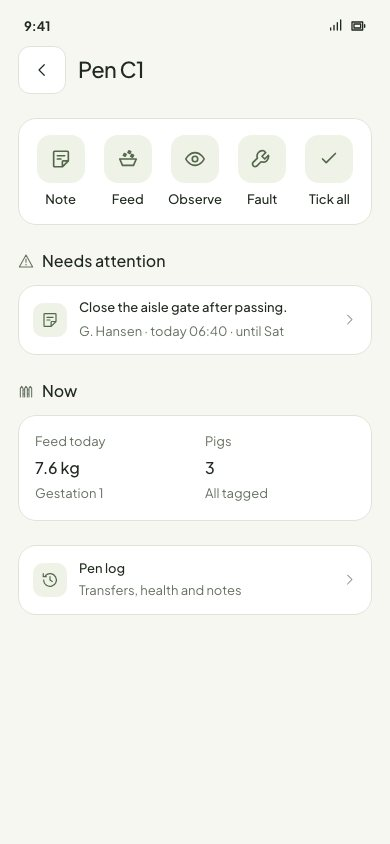
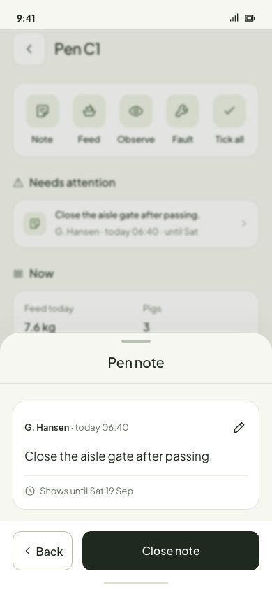
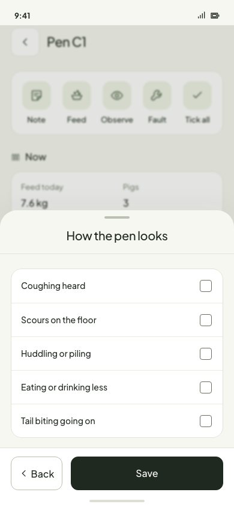


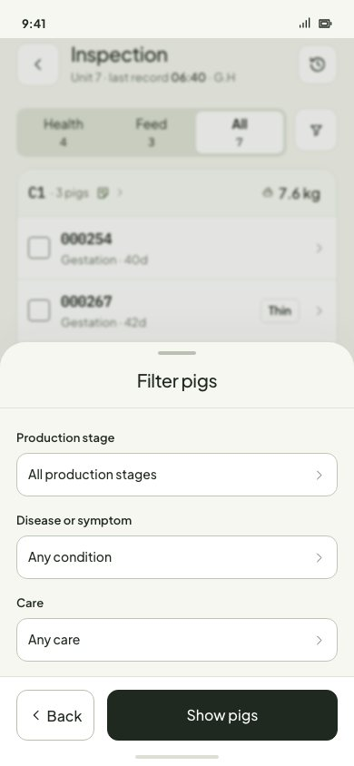
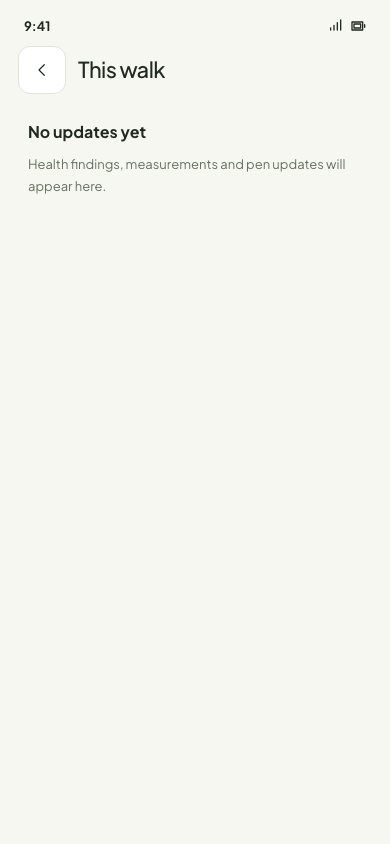